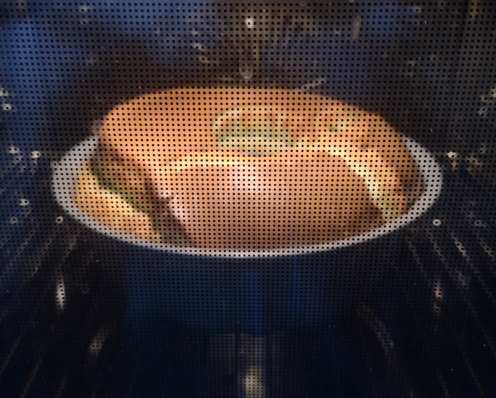

Pandan Cake


Instructions
- Preheat oven to 170°C.
- Separate the egg yolk (5) and egg white (6) into separate bowls.
- In the bowl of the yolk add the sugar (32g), milk (35g) and corn oil (25g). Then whisk it well until well combined.
- Sift in flour (134g), coconut milk powder (15g), baking powder (1tsp) and salt (0.5g) to the yolk mixture, and whisk well until well combined. Then add 4 drops of pandan extract and whisk until evenly coloured.
- Using a stand mixer/electric mixer beat the egg whites at low speed and add cream of tartar (½ tsp) after the egg whites have turned foamy. Then gradually add the sugar (68g) to the egg whites as it is whisked. Once all the sugar has been added you can increase the speed to high and whisk until you achieve stiff peaks.
- Fold ¼ of your egg whites into the batter until well combined. Then pour the batter into your egg whites and fold until well combined.
- Pour your finished batter into the baking tin evenly, then use a skewer to help spread the batter evenly and get rid of air bubbles within the batter.
- Put it in the oven to bake, then after 10 mins of baking reduce the temperature to 165°C and bake for an extra 10 mins to then finally reduce the temperature to 155°C to bake for 5 mins, making a total of 25 mins baking time.
- Take the baking tin out of the oven and flip it upside down and place it on top of the bottom of a mug supporting the middle hole of the tin and cool for around 10-15mins.
- Using a rubber spatula gently slide against the sides between the cake and tin and then from the side of the tin press the cake down to get it out onto a plate.
- Leave the cake for a day before serving to let the moisture and flavour distribute more evenly throughout the cake (optional).
Useful Resources
| Resource | Description | Hyperlink |
|---|---|---|
| Example Video | Here is an example video of a similar recipe | Pandan Chiffon Cake Recipe |
Ingredients
- 134g Plain Flour
- 25g Corn Oil
- 35g Milk
- 15g Coconut Milk Powder
- 5 Large Egg Yolks
- 6 Large Egg Whites
- 1/2 tsp Cream of Tartar
- 1 tsp Baking Powder
- Pandan Extract
- 100g Caster Sugar
- 0.5g Salt